Sage Master
Sage Master

Striker set
Lv 45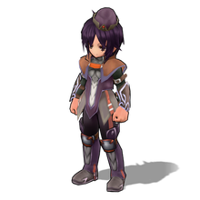
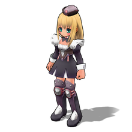
Other options
How to get
- All pieces from Arus's Mother, a reward of the Lv 45 Armor Quest
Technical job · Fighter
A long-range job with pistols and rifles that switches to and from Striker with Job Switching.
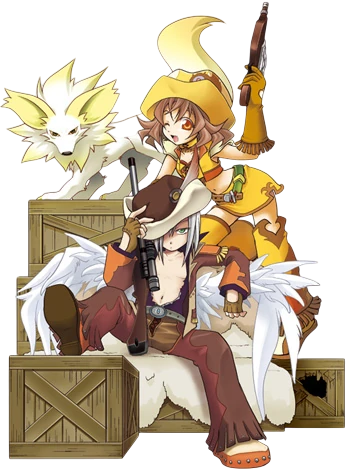
Requirement: STR 30 or higher, as a Striker at any Job Level.
Talk to the Sage Master and choose to browse the items on top of the shelves.
Buy a  Forbidden Book for 100,000 G.
Forbidden Book for 100,000 G.
 Pistol MasteryPassive · Max Lv 5
Pistol MasteryPassive · Max Lv 5| Lv | Minimum ATK | Flat L.HIT | L.HIT scaling rate |
|---|---|---|---|
| 1 | +30 | +1 | 2% |
| 2 | +35 | +2 | 3% |
| 3 | +40 | +3 | 4% |
| 4 | +45 | +4 | 5% |
| 5 | +50 | +5 | 6% |
Consumes 1 bullet and deals ranged physical damage to one target.
| Lv | SP | Cast time | Cooldown | Bullets consumed | Damage rate |
|---|---|---|---|---|---|
| 1 | 4 | 0 sec | 0 sec | 1 | 160% |
| 2 | 5 | 0 sec | 0 sec | 1 | 180% |
| 3 | 6 | 0 sec | 0 sec | 1 | 200% |
| Lv | SP | Cast time | Cooldown | Shots | Shots with Dual Guns | Damage rate per shot |
|---|---|---|---|---|---|---|
| 1 | 15 | 0.5 sec | 1.5 sec | 2 | 3 | 120% |
| 2 | 20 | 0.75 sec | 1.5 sec | 2-3 | 3-4 | 120% |
| 3 | 25 | 1 sec | 1.5 sec | 3-4 | 4-5 | 120% |
| 4 | 30 | 1.25 sec | 1.5 sec | 3-5 | 4-6 | 120% |
| 5 | 35 | 1.5 sec | 1.5 sec | 4-6 | 5-7 | 120% |
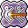
Piercing ShotActive physical attack · Max Lv 5Deals physical damage; can knock the target back; applies Stiffness.
| Lv | SP | Cast time | Cooldown | Damage rate |
|---|---|---|---|---|
| 1 | 7 | 0.5 sec | 1 sec | 120% |
| 2 | 7 | 0.5 sec | 1 sec | 130% |
| 3 | 8 | 0.5 sec | 1 sec | 140% |
| 4 | 8 | 0.5 sec | 1 sec | 150% |
| 5 | 9 | 0.5 sec | 1 sec | 160% |
Rifle MasteryPassive · Max Lv 5| Lv | Minimum ATK | Flat L.HIT | L.HIT scaling rate |
|---|---|---|---|
| 1 | +30 | +1 | 2% |
| 2 | +35 | +2 | 3% |
| 3 | +40 | +3 | 4% |
| 4 | +45 | +4 | 5% |
| 5 | +50 | +5 | 6% |
Deals physical damage; area: 3x3.
| Lv | SP | Cast time | Cooldown | Total damage rate |
|---|---|---|---|---|
| 1 | 15 | 2 sec | 1 sec | 390% split by targets |
| 2 | 20 | 2 sec | 1 sec | 440% split by targets |
| 3 | 25 | 2 sec | 1 sec | 490% split by targets |
Consumes 1 bullet and fires along a direct path up to 9 cells toward the selected ground point, dealing ranged physical damage to valid enemies touched by the path.
| Lv | SP | Cast time | Cooldown | Path length | Bullets consumed | Damage rate |
|---|---|---|---|---|---|---|
| 1 | 17 | 2 sec | 1 sec | Up to 9 cells | 1 | 400% |
| 2 | 22 | 2 sec | 1 sec | Up to 9 cells | 1 | 450% |
| 3 | 27 | 2 sec | 1 sec | Up to 9 cells | 1 | 500% |
| Lv | SP | Cast time | Cooldown | Area | Stun chance | Stun duration |
|---|---|---|---|---|---|---|
| 1 | 3 | 2 sec | 1 sec | 5x5 | 30% | 5 sec |
| 2 | 6 | 2 sec | 1 sec | 5x5 | 40% | 5 sec |
| 3 | 9 | 2 sec | 1 sec | 5x5 | 50% | 5 sec |
Dual Pistol MasteryPassive · Max Lv 5| Lv | Minimum ATK | Flat L.HIT | L.HIT scaling rate |
|---|---|---|---|
| 1 | +30 | +1 | 2% |
| 2 | +35 | +2 | 3% |
| 3 | +40 | +3 | 4% |
| 4 | +45 | +4 | 5% |
| 5 | +50 | +5 | 6% |
Increase Dual Pistol AccuracyPassive · Max Lv 5Improves L.HIT while using dual guns.
| Lv | L.HIT |
|---|---|
| 1 | +3 |
| 2 | +6 |
| 3 | +10 |
| 4 | +15 |
| 5 | +20 |
Increases the caster's attack range for 30 seconds.
| Lv | SP | Cast time | Cooldown | Duration | Range bonus |
|---|---|---|---|---|---|
| 1 | 20 | 2.5 sec | 1 sec | 30 sec | +1 |
| 2 | 30 | 2.5 sec | 1 sec | 30 sec | +2 |
| 3 | 40 | 2.5 sec | 1 sec | 30 sec | +3 |
| Lv | SP | Cast time | Cooldown | Area | Slow chance | Slow duration |
|---|---|---|---|---|---|---|
| 1 | 3 | 2 sec | 1 sec | 5x5 | 30% | 6 sec |
| 2 | 6 | 2 sec | 1 sec | 5x5 | 40% | 6 sec |
| 3 | 9 | 2 sec | 1 sec | 5x5 | 50% | 6 sec |
Deals physical damage; applies Hit Melee Down, Hit Ranged Down.
| Lv | SP | Cast time | Cooldown | Damage rate |
|---|---|---|---|---|
| 1 | 15 | 1.5 sec | 1 sec | 110% |
| 2 | 17 | 1.5 sec | 1 sec | 120% |
| 3 | 19 | 1.5 sec | 1 sec | 130% |
| 4 | 21 | 1.5 sec | 1 sec | 140% |
| 5 | 23 | 1.5 sec | 1 sec | 150% |
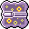
Stun ShotActive physical attack · Max Lv 5Deals physical damage; applies Stun.
| Lv | SP | Cast time | Cooldown | Damage rate |
|---|---|---|---|---|
| 1 | 3 | 1 sec | 1 sec | 150% |
| 2 | 3 | 1 sec | 1 sec | 150% |
| 3 | 5 | 1 sec | 1 sec | 150% |
| 4 | 5 | 1 sec | 1 sec | 150% |
| 5 | 7 | 1 sec | 1 sec | 150% |
CQBPassive · Max Lv 3| Lv | S.HIT scaling rate | S.AVOID scaling rate |
|---|---|---|
| 1 | 3.3% | 3.3% |
| 2 | 6.6% | 6.6% |
| 3 | 9.9% | 9.9% |
| Lv | SP | Cast time | Cooldown | Duration | ASPD bonus |
|---|---|---|---|---|---|
| 1 | 18 | 0 sec | 0 sec | 20 sec | +16.7% |
| 2 | 27 | 0 sec | 0 sec | 20 sec | +25% |
| 3 | 36 | 0 sec | 0 sec | 20 sec | +33.3% |
Deals physical damage; area: 5x5.
| Lv | SP | Cast time | Cooldown | Damage rate |
|---|---|---|---|---|
| 1 | 22 | 3 sec | 2 sec | 100% |
| 2 | 27 | 3 sec | 2 sec | 125% |
| 3 | 32 | 3 sec | 2 sec | 150% |
| 4 | 37 | 3 sec | 2 sec | 175% |
| 5 | 42 | 3 sec | 2 sec | 200% |
| Lv | SP | Cast time | Cooldown | Duration |
|---|---|---|---|---|
| 1 | 15 | 2 sec | 1 sec | 5 sec |
| 2 | 20 | 2 sec | 1 sec | 10 sec |
| 3 | 25 | 2 sec | 1 sec | 15 sec |
| Lv | SP | Cast time | Cooldown | Damage rate |
|---|---|---|---|---|
| 1 | 11 | 1 sec | 1.5 sec | 250% |
| 2 | 15 | 1.25 sec | 1.25 sec | 300% |
| 3 | 19 | 1.5 sec | 1 sec | 350% |
| 4 | 23 | 1.75 sec | 0.75 sec | 400% |
| 5 | 27 | 2 sec | 0.5 sec | 450% |
Deals physical damage; area: 7x7.
| Lv | SP | Cast time | Cooldown | Damage rate |
|---|---|---|---|---|
| 1 | 20 | 2 sec | 0 sec | 150% |
| 2 | 25 | 1.75 sec | 0 sec | 250% |
| 3 | 30 | 1.5 sec | 0 sec | 350% |
| 4 | 35 | 1.25 sec | 0 sec | 450% |
| 5 | 40 | 1 sec | 0 sec | 550% |
Consumes 5 bullets and deals a heavy ranged physical shot to one target.
| Lv | SP | Cast time | Cooldown | Bullets consumed | Damage rate |
|---|---|---|---|---|---|
| 1 | 31 | 4 sec | 1 sec | 5 | 300% |
| 2 | 35 | 4.5 sec | 1 sec | 5 | 550% |
| 3 | 39 | 5 sec | 1 sec | 5 | 800% |
| 4 | 43 | 5.5 sec | 1 sec | 5 | 1,050% |
| 5 | 47 | 6 sec | 1 sec | 5 | 1,300% |


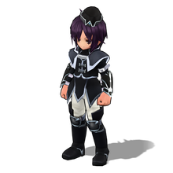
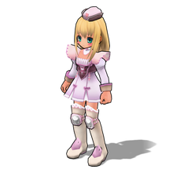
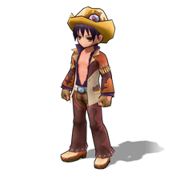
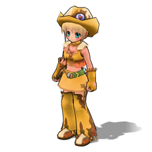
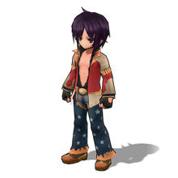
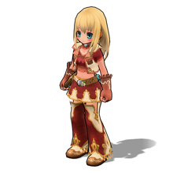